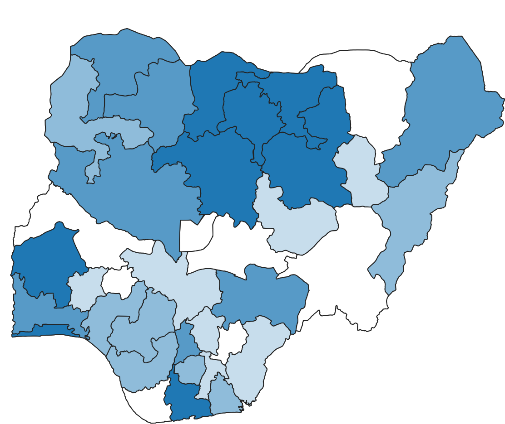
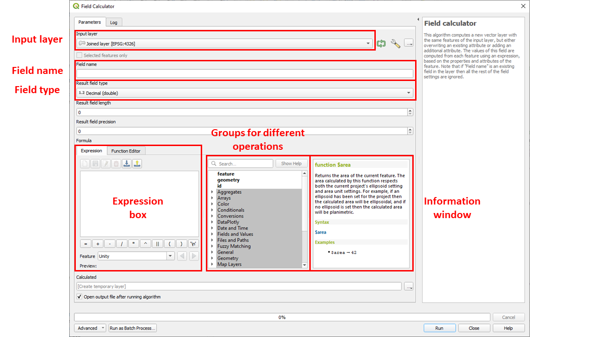

Procesamiento no espacial#
Introducción#
El procesamiento de datos no espaciales en QGIS se refiere a la manipulación de datos de atributos sin implicar directamente componentes o información espacial, como las relaciones espaciales o las geometrías.
Modifica los atributos no geométricos de los conjuntos de datos (es decir, la tabla de atributos).
El procesamiento no espacial puede utilizarse para realizar cálculos, generar estadísticas y obtener información sobre los aspectos no espaciales de los conjuntos de datos geoespaciales.
QGIS ofrece diversas herramientas de procesamiento no espacial para ayudar a los usuarios a gestionar y analizar eficazmente los datos de atributos.
Esto puede incluir la limpieza, transformación, enriquecimiento y análisis de datos basados en la información de atributos asociada, como estadísticas de población, clasificaciones de uso del suelo o indicadores económicos.

Captura de pantalla de una tabla de atributos para la versión 3.28.4 de QGIS.#
Uniones no espaciales (unir atributos por valor de campo)#
Se pueden hacer muchos análisis con una sola capa. Pero, a veces, la información necesaria para nuestro análisis está dividida entre diferentes conjuntos de datos/capas de datos.
Con QGIS, estas capas pueden combinarse para realizar el análisis que deseemos. La forma más sencilla de combinar capas es mediante una unión de atributos. Esta operación busca información de una segunda fuente de datos basándose en un valor de atributo compartido. Este valor funciona como identificador único común, también conocido como ID, UID o clave (véase
simple_attr_join_example).

Las entradas de las dos tablas de datos pueden unirse a través del campo ID común.#
Ejemplo en el ámbito humanitario:
*Un flujo de trabajo SIG habitual en el ámbito humanitario que implica uniones no espaciales consiste en unir datos sobre límites administrativos utilizando códigos P como identificador común/atributo compartido.
Los códigos P son códigos de identificación de unidades administrativas (por ejemplo, país (adm0), región (adm1), distrito (adm2)), que se introdujeron para simplificar la unión de datos tabulares sobre regiones administrativas. Estos códigos identifican claramente las unidades administrativas facilitando las uniones no espaciales.
Por ejemplo: Tenemos un conjunto de datos espaciales que contiene los límites administrativos de los distritos (adm2) de Nigeria y una tabla de datos que contiene la población por distrito, pero sin los polígonos. Utilizando los códigos P como atributos de identificación, podemos unir fácilmente los datos de población con el conjunto de datos vectoriales.*

El código P asociado al distrito Edo Sur es NG01201.#
Attention
Una unión de atributos en QGIS solo funciona correctamente cuando los atributos coinciden exactamente.
Por ejemplo: “S. Sudán” no coincidirá con “South Sudan”.
Siempre que sea posible, lo mejor es utilizar atributos que hayan sido diseñados para la unión, como los códigos P o los identificadores que no puedan lugar a errores ortográficos.
Ejercicio: Realizar una unión no espacial#
En este breve ejercicio guiado, añadiremos los datos de población a la capa de límites administrativos (adm1).
Descargue las capas necesarias aquí, descomprímalas y añádalas a su proyecto QGIS.
Tip
La capa de población debe añadirse como una capa de texto delimitada (Layer > Add Layer > ) sin geometría.
Abra la herramienta “Join Attributes by Field Value” de la caja de herramientas de Procesos.
Como capa de entrada 1, seleccione la capa
nga_admbnda_adm1_osgof_20190417, configure “Table Field” aADM1_PCODEComo capa de entrada 2, seleccione la capa
nga_adm1pop_2022, configure “Table Field” aADM1_PCODE. Además, en “Layer 2 fields to copy”, seleccioneF_TL,M_TLyT_TL.Haga clic en
Run. Aparecerá una nueva capa en su panel de capas denominada “Joined Layer”.

Configurar los parámetros de la unión en código P#
Abra la tabla de atributos de la nueva capa y desplácese hacia la derecha. Aquí encontrará los atributos unidos.
¡Estupendo! Hemos añadido correctamente los datos de población a nuestra capa de límites administrativos. Ahora, podemos visualizar la distribución de la población o seguir analizando nuestros datos.
{kind=link}

Los datos unidos se clasifican utilizando la simbología graduada para el valor de población.#
Funciones de la tabla#
Las funciones de la tabla suelen implicar solo una única capa de datos y manipulan la tabla de atributos. Puede añadir nuevos campos, eliminar campos no deseados o incluso calcular nuevos campos utilizando la calculadora de campos.
Para obtener una descripción general detallada de la funcionalidad de la tabla de atributos y su propósito, le invitamos a explorar el artículo de Wiki sobre el tema.
Añadir campo#
Se puede acceder a la información contenida en una capa vectorial a través de su tabla de atributos, y se puede mejorar introduciendo nuevos campos en esta tabla. Estos campos adicionales pueden derivarse de cálculos, como se ejemplifica en el siguiente caso, en el que la densidad de población se calcula para proporcionar una visión más profunda de las distribuciones espaciales de la población.
Attention
La selección del tipo de datos adecuado debe coincidir con la información que se añade al nuevo campo de atributo. Téngalo en cuenta cuando vea el video de ejemplo.
Posibles tipos de datos:
Los más comunes son:
Número entero: Entero (32 y 64 bits)
Número decimal (real)
Texto (cadena)
Opciones adicionales:
Fecha y hora
Booleano
Ejemplo: Añadir un campo para la densidad de población
Borrar campo#
También es posible borrar campos de la tabla de atributos. Una práctica comúnmente utilizada es eliminar todos los campos no utilizados o innecesarios de una capa antes de empezar a trabajar en ella. Esto hace que el conjunto de datos esté mucho más organizado.
Ejemplo: Eliminar todos los campos no utilizados o innecesarios de una capa vectorial
Calcular campos#
Una práctica importante es calcular los valores de los atributos de un campo, por ejemplo, a partir de los valores de otros campos. En QGIS, puede crear un campo nuevo o actualizar un campo existente.
Note
Es necesario comprobar si el tipo de datos del campo (nuevo o actualizado) y su cálculo coinciden. Por ejemplo, si está calculando una proporción (por ejemplo, la densidad), el campo no debe ser de tipo entero, sino de tipo número decimal.
Un ejemplo podría ser calcular la densidad de población a partir de los campos ya existentes de Población y Área.
Una herramienta muy importante para estos cálculos es la calculadora de campo. Le permite realizar cálculos basados en valores de atributos existentes o funciones definidas, por ejemplo, para calcular la longitud o el área de una entidad geométrica o, en el ejemplo dado, podría utilizarse para calcular la densidad de población basándose en los campos ya existentes Población y Área. Los resultados de estos cálculos pueden escribirse en un campo nuevo o actualizar un campo existente.
{kind=link}

Captura de pantalla de la calculadora de campo#
A continuación se enumeran los grupos más importantes y sus respectivas funciones que se proporcionan con la calculadora de campo:
Campos y valores
Contiene una lista de campos de la capa
Geometría
Calcula el área de una entidad de polígono:
$areaCalcula la longitud de una entidad de línea:
$lengthCalcula el centroide de una entidad de polígono:
centroid($geometry)Calcula el cuadro delimitador de una entidad:
bounds($geometry)Calcula la distancia entre dos puntos:
distance(point_a, point_b)
Matemáticas
Calcula la raíz cuadrada de un campo:
sqrt("field")Calcula el
minymax
Ejemplo: Calcular la densidad de población
Estadísticas básicas de los campos#
La herramienta Basic statistics for fields genera estadísticas para un campo específico de la tabla de atributos de una capa vectorial. Los resultados se generan como un archivo HTML y se puede acceder a ellos utilizando el enlace ruta del archivo en el Visor de resultados. Esta operación es muy valiosa para conocer a fondo los datos con los que se pretende trabajar. Permite determinar el intervalo de valores, precisar los valores mínimos y máximos. En el ejemplo proporcionado, esta operación se aplica para calcular la densidad de población global, lo que permite identificar con facilidad la región más densamente poblada del mundo.
Ejemplo: Calcular estadísticas de densidad de población por campo para países de todo el mundo.
Estadísticas por categorías#
Para calcular las estadísticas de un campo en función de una clase principal puede utilizar la herramienta Statistics by categories. La clase principal es una combinación de valores de otros campos.
Cuestiones que deben tenerse en cuenta al realizar estos cálculos:
¿Para qué campos deben calcularse las estadísticas en la tabla de atributos?
¿Qué campo de la tabla de atributos contiene qué información?
Para conseguir una mayor precisión en estos cálculos, la opción “statistics by categories” ofrece una visión más completa que las mencionadas anteriormente. En este caso, resulta sencillo determinar el número de ciudades por país con más de 300 000 habitantes y, para cada país, la población que vive en la mayor aglomeración urbana.
Ejemplo: Ciudades de más de 300 000 habitantes y cantidad de población en las mayores aglomeraciones.
Consultas no espaciales#
En SIG, puede consultar (filtrar) datos basados en información de atributos específicos. Una vez que el filtrado se ha realizado correctamente, solo se muestran las entidades deseadas que corresponden al atributo elegido. El filtrado de datos es una técnica valiosa para crear subconjuntos de entidades que pueden exportarse como una nueva capa.
Selección manual#
Es posible seleccionar manualmente filas concretas haciendo clic en el número que aparece a su izquierda. Esto resulta muy útil para seleccionar un número reducido de filas. Si se seleccionan correctamente, aparecerán en amarillo.
Ejemplo: Selección manual de filas.
Selección por expresión#
En este cuadro de diálogo, puede construir sus expresiones para consultar los datos. Hay varios operadores que se pueden utilizar para filtrar su capa vectorial.
operador |
función |
|---|---|
+ |
suma |
- |
resta |
* |
multiplicación |
/ |
división |
% |
resto de la división |
operador |
función |
|---|---|
= |
igual a |
!= |
no igual |
< |
menor que |
> |
mayor que |
<= |
menor que o igual a |
>= |
mayor que o igual a |
Se pueden utilizar operadores como AND, OR para combinar diferentes consultas o criterios.
operador |
función |
|---|---|
AND |
lógico Y |
OR |
lógico O |
NOT |
lógico NO |
operador |
función |
|---|---|
LIKE |
concordancia de patrones |
IN |
comprueba si un valor está en una lista de valores |
IS NULL |
comprueba si hay valores null |
BETWEEN |
comprueba si un valor está dentro de un rango específico |
CASE WHEN |
expresiones condicionales |
La consulta de sus datos para responder a preguntas más complejas es de gran importancia. Para ello, utilice la herramienta “Selección por expresión”. En el ejemplo proporcionado, aspiramos responder a la pregunta: ¿Qué ciudades, excluidas las que tenían una población de un millón de habitantes en 1950, habían superado los diez millones de habitantes en 2015?
Ejemplo: Ciudades, excluidas las que tenían una población de un millón de habitantes en 1950, que han superado los diez millones de habitantes en 2015.
SQL#
Otra posibilidad para crear sus expresiones es utilizar SQL.
SQL (Structured Query Language) es un lenguaje de programación estandarizado que se utiliza para gestionar bases de datos y realizar diversas operaciones con los datos que contienen. En el Constructor de consultas de QGIS, puede utilizar expresiones SQL para utilizar una o más condiciones para filtrar una capa.
Puede acceder fácilmente a los comandos esenciales de SQL consultando esta práctica hoja de referencia rápida. Ofrece un resumen conciso de las funciones básicas.
Generador de consultas#
El Generador de consultas proporciona una interfaz que permite definir un subconjunto de las entidades en la capa utilizando comandos de tipo SQL y mostrar los resultados en la ventana principal. Mientras la consulta esté activa, solo estarán disponibles en el proyecto las entidades correspondientes a su resultado. Puede utilizar uno o varios atributos de capa para definir el filtro en el generador de consultas. El generador de consultas está estructurado de la siguiente manera:

Captura de pantalla del generador de consultas#
La lista de campos contiene todos los campos de la capa. Para añadir una columna de atributos a la ventana de expresión, haga doble clic en su nombre o escríbalo en la casilla.
El cuadro Values enumera los valores del campo actualmente seleccionado.
Para enumerar todos los valores únicos de un campo, haga clic en el botón All.
Para enumerar los primeros 25 valores únicos de la columna, haga clic en el botón Sample.
Para añadir un valor a la ventana de expresión, haga doble clic sobre él en la lista valores. Puede utilizar el cuadro de búsqueda situado en la parte superior del panel “Values” para buscar fácilmente valores de atributos en la lista.
La sección Operators contiene todos los operadores utilizables. Para añadir un operador, haga clic en el botón correspondiente.
El botón Test ayuda a comprobar su consulta y muestra un cuadro de mensaje con el número de entidades que satisfacen la consulta actual.
Utilice el botón Clear para revertir la capa a su estado original.
Note
Cuando se aplica un filtro con el generador de consultas, QGIS trata el subconjunto resultante como si fuera la capa completa.
En este breve video, descubrirá la ubicación del generador de consultas y aprenderá a crear una consulta sencilla para aislar un estado concreto de un conjunto de datos que abarca todo el país. El ejemplo se centra en un conjunto de datos relacionados con Sudán del Sur y sirve como ilustración básica.
Ejemplo: Uso sencillo del generador de consultas.
Preguntas de autoevaluación#
Ponga a prueba sus conocimientos
¿Qué significa “procesamiento no espacial” en el contexto de SIG/QGIS? ¿En qué se diferencia de las operaciones espaciales?
Respuesta
El procesamiento no espacial se refiere a las operaciones que actúan únicamente sobre el lado de los atributos (la tabla o las columnas de datos) de una capa, sin utilizar ni modificar la geometría (ubicación, forma) de las entidades. Se manipulan datos sobre entidades, no sus relaciones espaciales.
Algunos ejemplos son la adición, eliminación o actualización de campos; el filtrado de registros basado en consultas de atributos; la realización de uniones de tablas basadas en campos clave coincidentes; el cálculo de nuevos valores a partir de atributos existentes.
Por el contrario, las operaciones espaciales implican geometría: utilizan relaciones espaciales (proximidad, intersección, contención) y a menudo producen cambios en la forma, el tamaño o la disposición de las entidades (por ejemplo, buffer, intersección, recorte, unión). Las herramientas espaciales calculan nuevas geometrías o reestructuran las existentes.
¿Qué es una “unión no espacial” (unir atributos por valor de campo)? Describa cómo y cuándo la utilizaría.
Respuesta
Una unión no espacial (en QGIS a menudo denominada Unir atributos por valor de campo) vincula datos de atributos de una tabla (o datos no espaciales) a otra capa de entidades basándose en un valor clave común (campo), no basándose en la geometría. También se denomina unión tabular o unión por atributos.
Se utilizaría cuando se tienen dos conjuntos de datos que comparten un atributo común (por ejemplo, un código de región, un ID, un nombre) y se desea enriquecer una capa con atributos adicionales de la otra. Por ejemplo: usted tiene una capa de polígonos administrativos y una tabla separada de estadísticas de población codificadas por el mismo código administrativo; usted quiere traer esas cifras de población a la capa de polígonos para poder mapearlas o analizarlas.
La unión no espacial añade campos de una capa o conjunto de datos a la tabla de atributos de la capa de destino cuando la clave coincide.
¿Qué condiciones deben cumplirse para que una unión no espacial funcione correctamente? (Por ejemplo, campos clave, valores coincidentes, tipos de datos)
Respuesta
Campo clave común presente en ambas tablas
Tanto la capa de destino (la que recibe la unión) como la tabla de unión deben tener un campo (columna) que es la “join key”, que contiene identificadores coincidentes en las filas correspondientes.
Valores coincidentes en esos campos clave
Los valores del campo clave deben superponerse: para cada entidad de la capa de destino de la que desee obtener datos unidos, debe haber un valor coincidente en el campo clave de la tabla de unión. Si no coinciden, el valor unido será normalmente NULL o en blanco.
Tipos de datos compatibles
Los campos clave deben ser del mismo tipo de datos o compatibles (por ejemplo, ambos enteros, o ambos de texto) para que QGIS pueda hacerlos coincidir. Si uno es un campo de texto y el otro es numérico, la coincidencia no funcionará de forma fiable.
Unicidad de valores
Lo ideal es que la tabla de unión tenga valores únicos en la clave de unión (unión uno a uno). Si hay múltiples filas coincidentes (uno a muchos), entonces es posible que se produzcan duplicados o coincidencias ambiguas; QGIS puede tomar la primera coincidencia o agregar, dependiendo del método de unión.
La capa de destino normalmente no cambia su número de entidades: la unión solo añade campos, no duplica la geometría (a menos que se convierta a un archivo unido permanente de manera diferente).
¿Qué tipo de operaciones puede realizar con las funciones de tabla (añadir campo, borrar campo, calcular campo)?
Respuesta
Añadir campo: Crear una nueva columna de atributos (de un tipo elegido, por ejemplo, entero, decimal, texto) para contener valores calculados o importados.
Borrar campo: Eliminar campos/columnas no deseados o redundantes de la tabla de atributos de una capa.
Calcular campo (calculadora de campo): Calcular nuevos valores (para campos existentes o nuevos) utilizando expresiones (aritmética, lógica condicional, funciones) basadas en otros atributos, constantes o funciones. Por ejemplo: calcular la densidad de población = población / superficie; o clasificar valores utilizando la lógica CASE WHEN.
Actualizar/Editar campo existente: También se pueden actualizar o sobrescribir valores en un campo existente, siempre que la capa esté en modo de edición.
¿Qué es una consulta no espacial? ¿Cómo utilizaría “Select by expression” para filtrar sus datos?
Respuesta
Una consulta no espacial es una consulta aplicada a la tabla de atributos (campos) en lugar de basarse en la geometría. Filtra o selecciona filas (entidades) a partir de condiciones de atributo, no de condiciones espaciales.
En QGIS, “Select by expression” es una herramienta que permite escribir expresiones lógicas (por ejemplo,
"population" > 10000 AND "region" = 'East') para seleccionar el subconjunto de entidades cuyos atributos satisfacen los criterios.Tras la selección, puede utilizar el subconjunto seleccionado para otras operaciones (por ejemplo, exportar las entidades seleccionadas, aplicarles un estilo diferente, analizarlas solo a ellas, etc.).